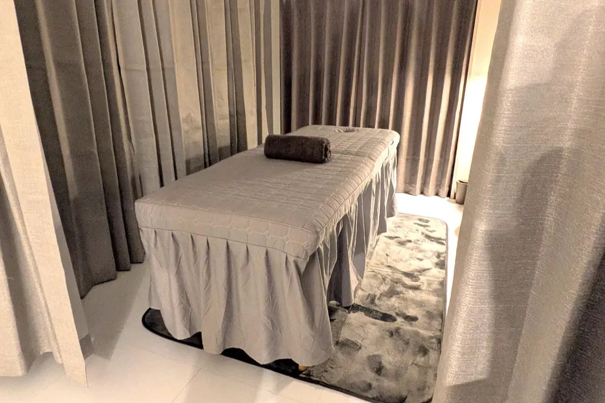

初回
3,300円 税込- 所要時間
- 約60分
- 内容
- 問診・検査・施術
迷わず、今の自分に必要な情報へ
ページを順番に読む必要はありません。
知りたいことを選ぶと、必要なご案内だけを表示します。

GUIDED INFORMATION
下の3項目から選択してください。入力内容の送信や保存は行いません。
初めての方へ
初回は約60分。問診・検査を含め、現在の状態を丁寧に確認します。
症状と希望日時をお送りください。内容を確認してご返信します。
お困りのことや経過を伺い、身体の状態を確認します。
必要な施術を行い、確認できたことを分かりやすくお伝えします。
状態に合わせた考え方をご案内します。通院を強制することはありません。
料金・通院について
お支払い方法：現金・クレジットカード・電子マネー・QR決済
初回
3,300円 税込2回目以降
5,500円 税込OUR APPROACH
症状名だけで決めつけず、現在の状態と身体全体のつながりを確認することを大切にしています。
お困りのことや経過を伺い、今の身体に何が起きているのかを一緒に整理します。
状態に合わせて施術を組み立て、分かりやすい言葉でご説明します。
今後について相談し、ご自身で納得して選べることを大切にします。

LINE CONSULTATION
現在お困りのことと希望日時を、分かる範囲でお送りください。
LINEで確認できます 空き状況を見る →